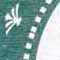
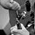
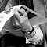

|
• SMS, h 00:35
• SMS, h 01:00
Ljubljana, h 01:57
Tornati ora dalla nostra scorrazzata per la città.
Mangiato messicano quindi via per le strade alla ricerca del nostro solito non-so-che notturno.
Col camminare e il passare del tempo la situazione di disagio che ci accompagna dal ns arrivo in città ha preso una forma più precisa.
C'è tanta nuova ricchezza da queste parti. Il centro è na bella vetrina per turisti ordinata e curata. Uno specchio per allodole nel tentativo di sviare dalla povertà che si spande verso le periferie e oltre.
La Slovenia è piccola e poco attraente. Oltre alla capitale non sembra esserci nient'altro. Un'indipendenza voluta da una minoranza borghese per ampliare la propria ricchezza e il proprio potere. Una città blindata da uniformi di tutti i tipi.
È proprio vero, dal crollo del socialismo reale si è creata una una casta minoritaria di ricchi e potenti. Gli alri sono esclusi dal centro storico e dalle zone ricche della città,come in molte altre città dell'ex blocco comunista.
Le iene occidentali nella loro foga coloniale stanno esportando il peggio del modello liberista.
Abbiamo visto girare in scooter un neonazi con elmetto nero SS, tatuaggio di un Cristo crocefisso sul polpaccio sinistro e altri ammenicoli de paura. Dopo un attimo di perplimazione ci è montata una gran voglia di rovinarlo di botte.
Cena e passeggiata in centro e un locale, il Latino Bar o qualcosa di simile. Cazzo, sembrava di essere nell'Italia dei primi anni '80, ma un'Italia malfatta e snaturata. Niente era latino nel locale, musica commerciale vecchia di eoni, maranza di quart'ordine, fasci tanto sbruffoni quanto ignoranti, menti povere e facce scimmiesche.
In compenso le donne qui sono tutte belle, anche le brutte.

h 10:37
In auto vagabondiamo per la periferia di Ljubljana. La periferia è meno peggio di quanto pensassimo, mantiene una sua dignità.
In ostello abbiamo incontrato dei milanesi di ritorno dalla Romania in moto. Hanno visto l'eclisse da lì... è stato uno spettacolone anche se parzialmente rovinato dal maltempo. Lì l'eclisse è stata al 100%.
Josto ci segnala la prossima eclisse per il 2004, non si sa in che parte del mondo. Spero di esserci.
Paglia.
• SMS, h 13:14
h 13:34
Eccoci in Italia. Incrociamo ora attorno a Trieste i motociclisti milanesi incontrati poco prima in ostello.
Nulla da segnalare. Lo spirito del viaggio va via via spegnendosi col diminuire dei chilometri che ci separano da Ferrara. |